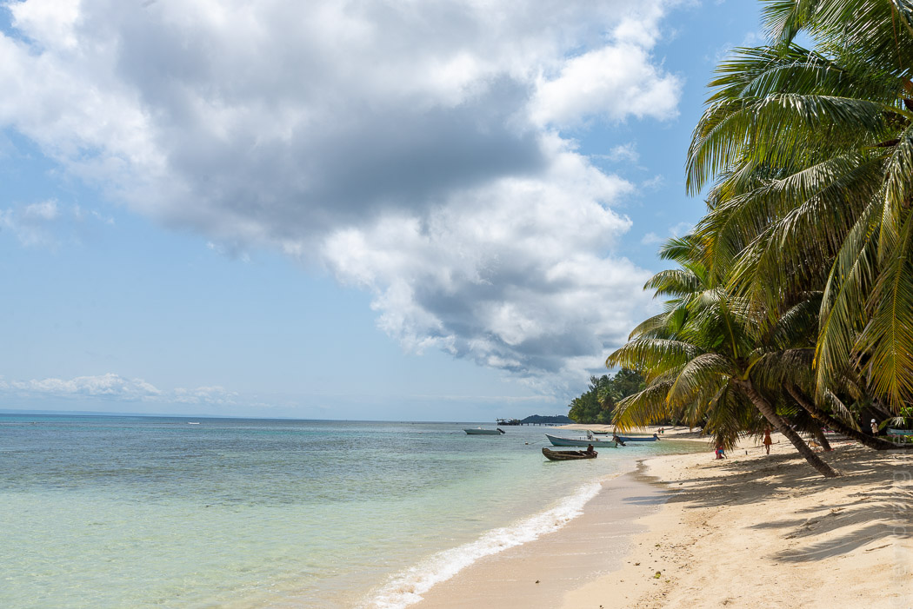

Die Überfahrt auf die Insel Sainte Marie startete in der Nähe unseres Hotels vom Strand aus. Nach einer Anmeldeprozedur in Zeitlupe wurden die Passagiere nach und nach in einem Beiboot zum draußen vor Anker liegenden Boot gebracht. Als wir endlich dran waren, ist auf halbem Weg der Motor ausgefallen. Für geübte Bootsmänner kein Problem. Nach ein paar Minuten war der Außenborder des Nachbarn halb demontiert und das gewünschte Ersatzteil freigelegt - in der schaukelnden Dünung wohlgemerkt. Die Überfahrt auf der Fähre hat ein paar Stunden gedauert und bot auf dem Deck gute Sonnenbrandgelegenheiten.
Sainte Marie ist ein langer, grüner, Palmen bestandener Strich im Meer. Wir haben im unaussprechlichen Hauptort Ambodifototra angelegt, wo es auf ein- bis zweihundert Metern fast städtisch aussah. Unsere Unterkunft lag am Südende der Insel. Auf dem Weg dorthin sind die unvermeidbaren Schlaglöcher kaum aufgefallen, weil wir von den schönen Aussichten so abgelenkt waren. Die Straße verlief in Sichtweite des Meeres. Dazwischen waren überschaubare Hotelanlagen, entspannte kleine Dörfchen oder einfach nur Palmen. Das Meer war ruhig und plätscherte glitzernd an den Strand.
Die Unterkunft Ravoraha Lodge hat nur neun Bungalows, die um einen liebevoll gepflegten Garten liegen. Davor erstreckt sich direkt der makellose, weiße Strand. Im Schatten der Palmen (oder auch nicht) hatten wir ein paar herrlich entspannte Tage.
Der Flughafen der Insel lag etwa 500m von unserem Hotel entfernt. Von Lärmbelästigung konnte aber keine Rede sein, da selten mehr als ein Flugzeug pro Tag ankam. Auf unserem Strandabschnitt hatten wir Logenplätze für die Landung.
Die kleine Schwesterinsel Nosy Nato liegt gleich nebenan. Wir sind mit einen Kajak dorthin gefahren und hatten dafür den einzigen Regenschauer des Urlaubs abgepasst. Man kann dort zwar gut baden, aber ansonsten sah es nicht anders aus als bei uns.
Nach einem Roller-Ausflug in den mittleren Teil der Insel waren wir von unserem Standort im Süden umso mehr überzeugt. Die Mitte ist geschäftiger und bebauter, aber weniger schön. In einem der Schlaglöcher ist unserem schrottigen Roller der Auspuff gebrochen. Danach waren wir lauter als ein Flugzeug. Als wir endlich wieder zurück waren, hatten wir einen einseitigen Tinnitus und vermutlich hatten alle Vögel die Insel verlassen.